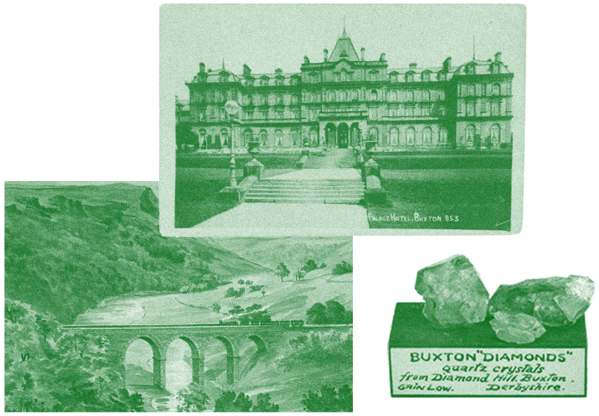

Anna Ellis
Rhodes
Get in touch
annaellisrhodes@gmail.com

Freelance museum consultant
I am a heritage and interpretation specialist with a background in museums. I’ve spent the last 17 years working in museums across the north west including the Wordsworth Trust, Macclesfield Museums, Science and Industry Museum and Buxton Museum and Art Gallery.
My freelance work has included working with communities to collect and curate stories about Buxton Opera House and being the research and interpretation lead for the visitor experience at Buxton Crescent Heritage Trust.
I currently work for the Collections Trust supporting museums across the UK with documentation and collections management.
What can I help you with?
- Collections management activities including planning and delivering stores moves, collections reviews and deaccessioning and disposal projects.
- Implementing the 5.1 Spectrum procedures.
- Writing and reviewing documents including Collections Development Policies, Documentation Policies, Documentation Procedures Manuals and Documentation Plans.
- Section 4 and 5 of the Accreditation standard.
- Interpretation and research for physical and online exhibitions.
- Oral histories and community engagement projects.
- Applying for, managing and reporting grants including National Lottery Heritage Fund.
Recent activity
- Packing and documenting objects at Buxton Museum and Art Gallery.
- Researching archive collections for Manchester Jazz Festival New Music Biennial Commission: PEACE - Manchester Jazz Festival
- Creating online exhibitions for Buxton Opera House - The Buxton Opera House Effect — Google Arts & Culture